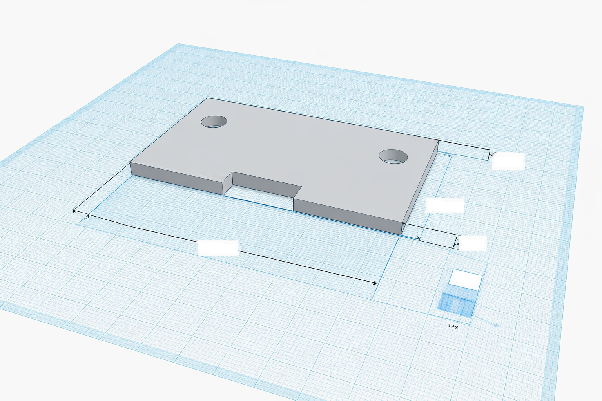

Calendrier Technologie 4ème - 2025/2026
| Date | Cours | Date | Cours |
|---|
Séance en cours de rédaction.
Séance en cours de rédaction.
Séance en cours de rédaction.
Séance en cours de rédaction.
Séance en cours de rédaction.
Séance en cours de rédaction.
Séance en cours de rédaction.
Séance en cours de rédaction.
Séance en cours de rédaction.
Séance libre avant vacances.
Séance 12 : Structure interne d’un robot aspirateur
Thème : Structure, fonctionnement et comportement d’un objet technique
Compétence visée : Décrire et caractériser l’organisation interne d’un objet technique
Objectifs d’apprentissage-
Ce que les élèves vont apprendre (connaissances) :
- Comprendre qu’un objet technique est composé de sous-systèmes (alimentation, commande, action, déplacement, détection)
- Savoir qu’un schéma fonctionnel interne représente le rôle de chaque partie d’un objet
- Identifier les liens entre les éléments matériels et les fonctions techniques (par ex. : moteur → déplacement)
-
Ce qu’ils vont apprendre à faire (capacités) :
- Identifier et nommer les principaux composants d’un robot aspirateur
- Classer ces composants selon leur rôle (énergie, commande, action)
- Réaliser un document numérique (schéma ou tableau) présentant la structure interne de l’objet
1. Introduction
Avant de programmer ou d’analyser le fonctionnement d’un objet automatisé, il faut comprendre comment il est organisé à l’intérieur.
Savoir repérer les parties qui assurent la détection, le traitement ou l’action permet ensuite de comprendre comment l’objet réagit et agit seul.
- D'après vous, quelles sont les parties importantes ? A quoi servent-elles ?
- Nous allons maintenant découvrir comment tout cela s'organise à l'intérieur d'un robot.
2. Recherches
- Créez un document (LibreOffice Writer) nommé : 4e_S12_G1.odt (pour le groupe 1, par exemple)
- Ce document doit comporter obligatoirement :
- Les noms et prénoms des élèves du groupe
- Le titre de la séance en cours
- Recherchez sur Internet les principaux composants internes d’un robot aspirateur (schéma, photos, liste de pièces...)
- Mots-clés suggérés :
- robot aspirateur composants internes
- fonctionnement robot aspirateur
- pièces robot aspirateur
- Notez les informations importantes dans votre document.
- Copiez et remplir le tableau suivant :
- | Batterie | Fournit l'énergie électrique | Energie |
- |Moteurs des roues|Permettent le déplacement|Action|
- ...
- Enregistrez et déposez votre document, correctement nommé, dans l’espace d’échange.
| Composant | Rôle / Fonction | Catégorie (Énergie / Commande / Action) |
3. À copier à la main
Mettre le titre de la séance.
Aujourd’hui, nous avons découvert la structure interne d’un robot aspirateur.
Un objet technique est composé de plusieurs parties appelées sous-systèmes : certains fournissent ou utilisent de l’énergie, d’autres détectent des informations ou réalisent des actions.
En observant les composants et leurs rôles, nous avons appris à faire le lien entre les fonctions techniques et les éléments matériels.
Cette organisation permet au robot de se déplacer, détecter les obstacles et agir de manière autonome.
Séance 13 : Les chaînes d’énergie du robot aspirateur
Thème : Structure, fonctionnement et comportement d’un objet technique
Compétence visée : Identifier les flux d’énergie dans un objet technique et comprendre leur rôle.
Objectifs d’apprentissage-
Ce que les élèves vont apprendre (connaissances) :
- Comprendre qu’un objet technique a besoin d’énergie pour fonctionner
- Savoir qu’une chaîne d’énergie transforme, transmet et distribue cette énergie
-
Identifier les étapes principales de la chaîne d’énergie :
→ Alimenter – Distribuer – Convertir – Transmettre – Agir
-
Ce qu’ils vont apprendre à faire (capacités) :
- Identifier les éléments du robot aspirateur qui participent à chaque étape de la chaîne d’énergie
- Classer ces éléments dans un tableau fonctionnel
- Créer un document numérique clair (tableau ou schéma) représentant la chaîne d’énergie complète du robot
1. Introduction
Aujourd'hui, nous allons comprendre comment le robot aspirateur utilise et transforme l’énergie afin de se déplacer et nettoyer.
Cette notion est essentielle avant d’aborder la chaîne d’information (prochaine séance) et la programmation : savoir comment le robot agit avant de comprendre comment il décide d’agir.
La séance précédente, nous avons repéré les composants internes du robot. Aujourd’hui, nous allons voir comment l’énergie circule entre eux, c'est ce que l'on appel, "la chaine d'énergie".
Présentation du schéma simplifié de la chaîne d’énergie :
ALIMENTER → DISTRIBUER → CONVERTIR → TRANSMETTRE → AGIR
Qu'est-ce que la chaine d'énergie ?
La chaîne d’énergie d’un objet technique décrit le trajet de l’énergie depuis sa source (ce qui la fournit) jusqu’à l’action finale (ce que fait l’objet).
C’est la partie du système qui permet à l’objet de bouger, fonctionner ou agir.
- Quelle est la source d’énergie du robot ?
- Qu’est-ce qui permet le déplacement ?
2. Recherche et construction du document
- Créez un document (LibreOffice Writer) nommé : 4e_S13_G1.odt (pour le groupe 1, par exemple)
- Recopiez et complétez le tableau suivant : (vous pouvez faire des recherches sur le web)
- Sur le site suivant : Diagrams.net
- Faire un schéma de la chaine d'énergie, en vous appuyant sur le tableau précédent
- Enregistrez ce schéma en .png
- Insérez le png dans votre document Writer
- Titrez le "Schéma de la chaine d'énergie d'un robot aspirateur"
- Enregistrez et déposez votre document, correctement nommé, dans l’espace d’échange.
| Étape de la chaîne d’énergie | Élément(s) du robot | Rôle |
| Alimenter | ||
| Distribuer | ||
| Convertir | ||
| Transmettre | ||
| Agir |
3. À copier à la main
Aujourd’hui, nous avons appris à représenter la chaîne d’énergie d’un robot aspirateur.
Cette chaîne montre comment l’énergie est fournie, distribuée, transformée et transmise pour faire fonctionner les moteurs et les brosses.
Dans le robot aspirateur : la batterie alimente le système, la carte électronique distribue l’énergie, les moteurs la convertissent en mouvement, et les roues transmettent ce mouvement pour que le robot se déplace et nettoie.
Comprendre la chaîne d’énergie permet d’expliquer comment un objet technique agit.
Séance 14 : Les chaînes d’information : capteurs et actionneurs
Thème : Structure, fonctionnement et comportement d’un objet technique
Compétence visée : Identifier les interactions entre un objet technique et son environnement à travers la chaîne d’information
Objectifs d’apprentissage-
Ce que les élèves vont apprendre (connaissances) :
- Comprendre qu’un objet automatisé perçoit, décide et agit grâce à une chaîne d’information
- Savoir qu’un capteur permet de recevoir des informations de l’environnement (obstacle, lumière, sol, distance...)
- Savoir qu’un actionneur permet de réaliser une action (mouvement, aspiration, son, lumière...)
- Identifier les principaux types de capteurs et d’actionneurs présents dans un robot aspirateur
-
Ce qu’ils vont apprendre à faire (capacités) :
- Rechercher les capteurs et actionneurs d’un robot aspirateur
- Expliquer leur rôle dans le fonctionnement global du robot
- Organiser les informations dans un document numérique structuré (tableau ou schéma)
1. Introduction
Tout objet automatisé — comme un robot aspirateur, une voiture autonome ou un lave-vaisselle — doit interagir avec son environnement.
Pour cela, il reçoit des informations (capteurs) et agit (actionneurs).
Comprendre cette chaîne d’information est indispensable pour préparer la programmation et la modélisation du comportement du robot.
schéma simplifié : Capteurs → Unité de commande → Actionneurs
Le robot perçoit grâce à des capteurs, décide grâce à sa carte électronique, et agit grâce à ses actionneurs2. Recherche et construction du document
- Créez un document (LibreOffice Writer) nommé : 4e_S14_G1.odt (pour le groupe 1, par exemple)
- Objectif : identifier les capteurs et actionneurs d’un robot aspirateur et expliquer leur rôle
- Recopiez et complétez le tableau suivant : (vous pouvez faire des recherches sur le web)
- Sur votre document, répondez à la question suivante : Que se passe-t-il si un capteur tombe en panne ? Si un actionneur ne répond plus ?
- Enregistrez et déposez votre document, correctement nommé, dans l’espace d’échange.
| Élément | Type | Fonction dans le robot | Famille (capteur / actionneur) |
| Capteur infrarouge | Détection | ||
| Capteur de vide | Sécurité | ||
| Capteur de saleté | Analyse | ||
| Moteur de roue | Mouvement | ||
| Turbine | Aspiration | ||
| Moteur de brosse | Nettoyage |
3. À copier à la main
Un robot aspirateur perçoit son environnement grâce à des capteurs (obstacles, poussière, vide).
Ces informations sont envoyées à une unité de commande, qui décide de l’action à réaliser.
Les actionneurs (moteurs, turbine, brosse) exécutent ces ordres.
Ce fonctionnement forme la chaîne d’information, indispensable pour que le robot agisse seul et de manière intelligente.
Diffusé le jour du test
Séance 16 : Identifier un dysfonctionnement
Thème : Structure, fonctionnement et comportement d’un objet technique
Compétence visée : Identifier un dysfonctionnement d’un objet technique à partir de son comportement observé
Objectifs d’apprentissage-
Ce que les élèves vont apprendre (connaissances) :
- Comprendre qu’un objet technique peut tomber en panne lorsqu’un de ses composants ou sous-systèmes ne fonctionne plus correctement
- Savoir qu’un dysfonctionnement se repère en observant le comportement anormal d’un objet
-
Connaître la méthode simple d’analyse :
→ Symptôme observé → Élément suspect → Hypothèse de cause
-
Ce qu’ils vont apprendre à faire (capacités) :
- Observer une situation de panne et identifier les éléments en cause
- Relier un symptôme à un composant défaillant du robot aspirateur
- Compléter un tableau de diagnostic à partir d’observations et de recherches
1. Introduction
Avant de réparer ou d’améliorer un objet, il faut savoir détecter d’où vient le problème.
Dans le monde réel, les techniciens et ingénieurs utilisent des procédures de diagnostic pour comprendre pourquoi un système ne fonctionne plus comme prévu.
-
Dans les scénarios de dysfonctionnement suivants, que peut il se passer :
- Le robot tourne en rond sans avancer
- Le robot s’arrête après 2 minutes
- Le robot ne détecte plus les obstacles
- Le robot ne se recharge plus
- Le robot fait beaucoup de bruit mais ne nettoie pas L’objectif n’est pas de trouver la vraie cause tout de suite, mais de comprendre la démarche de diagnostic
2. Recherche et construction du document
| Symptôme observé | Élément suspect | Cause possible | Solution proposée |
3. Mise en commun
- Quelques binômes présentent leur travail à la classe
4. À copier à la main
Identifier un dysfonctionnement, c’est observer, comprendre et proposer une solution logique.
Aujourd’hui, nous avons appris à identifier un dysfonctionnement dans un objet technique.
En observant le comportement anormal d’un robot aspirateur, nous pouvons relier le problème à une partie de son système interne.
Comprendre la cause d’une panne permet ensuite de corriger, améliorer ou entretenir l’objet.
C’est une étape essentielle avant toute réparation ou conception.
Séance 17 : Comment se déplace le robot ?
Thème : Structure, fonctionnement et comportement d’un objet technique
Compétence visée : Comprendre un comportement automatique d’un objet technique
Objectifs d’apprentissage-
Ce que les élèves vont apprendre (connaissances) :
- Comprendre que le déplacement d’un robot résulte d’une combinaison de capteurs, de moteurs et de traitement d’information
- Identifier les éléments responsables du mouvement (moteurs, roues, capteurs de direction, carte de commande)
- Découvrir la notion de comportement automatique : le robot agit seul selon les informations qu’il reçoit
-
Ce qu’ils vont apprendre à faire (capacités) :
- Identifier les éléments qui permettent le déplacement d’un robot aspirateur
- Expliquer comment ces éléments interagissent pour produire le mouvement
- Créer un document numérique (texte + schéma ou tableau) expliquant le fonctionnement du déplacement du robot
1. Introduction
Avant d’aborder la programmation ou la chaîne d’information, il faut comprendre comment le robot décide de bouger et comment il exécute ses mouvements.
Le déplacement est un excellent exemple du lien entre détection, traitement et action dans un système automatisé
2. Recherche et construction du document
- Créez un document (LibreOffice Writer) nommé : 4e_S17_G1.odt (pour le groupe 1, par exemple)
- Objectif : expliquer comment un robot aspirateur se déplace seul
- Recopiez et complétez le tableau suivant : (vous pouvez faire des recherches sur le web)
- Expliquez, en quelques phrases, comment ces éléments interagissent pour permettre au robot de se déplacer et éviter les obstacles
- Enregistrez et déposez votre document, correctement nommé, dans l’espace d’échange.
| Élément | Rôle dans le déplacement | Type (Entrée / Traitement / Sortie) |
| Capteur infrarouge | Détecte les obstacles | Entrée |
| Carte électronique | ||
| Moteurs de roues | ||
| Roue libre avant |
3. Mise en commun et structuration
-
Recherchez une vue interne simplifiée du robot avec les principaux éléments (capteurs, carte, moteurs).
- Que se passe-t-il quand le robot détecte un obstacle ?
- Qui décide du changement de direction ?
4. À copier à la main
Aujourd’hui, nous avons étudié comment un robot aspirateur se déplace.
Son mouvement est possible grâce à des moteurs qui font tourner les roues, mais aussi à des capteurs qui détectent les obstacles.
Une carte électronique traite les informations reçues et envoie des ordres aux moteurs.
Le robot se déplace donc automatiquement, sans intervention humaine directe, grâce au lien entre détection, traitement et action.
Séance 18 : L’énergie électrique du robot : stockage et recharge
Thème : Structure, fonctionnement et comportement d’un objet technique
Compétence visée : Identifier les flux d’énergie dans un objet technique et comprendre les solutions de stockage et de recharge
Objectifs d’apprentissage-
Ce que les élèves vont apprendre (connaissances) :
- Un robot aspirateur fonctionne grâce à l’énergie électrique stockée dans une batterie rechargeable
- La batterie alimente différents sous-systèmes (moteurs, capteurs, carte de commande)
- Lorsqu’elle est vide, le robot retourne à sa station de recharge pour se réalimenter
- Les énergies peuvent être converties (ex. : énergie électrique → énergie mécanique pour les roues)
-
Ce qu’ils vont apprendre à faire (capacités) :
- Identifier le cheminement de l’énergie dans un robot aspirateur
- Représenter la chaîne d’énergie sous forme de schéma simple
- Réaliser un document numérique illustré expliquant le fonctionnement énergétique du robot
1. Introduction
Aujourd'hui nous allons comprendre comment l’énergie circule à l’intérieur d’un objet automatisé permet d’expliquer son autonomie et ses limites d’utilisation.
Cette notion est essentielle pour relier la structure interne (vue lors de la séance précédente) à son comportement réel.
- Qu’est-ce qui permet au robot aspirateur de fonctionner sans fil ?
- Pourquoi retourne-t-il tout seul à sa base ?
2. Recherche et construction du document
- Créez un document (LibreOffice Writer) nommé : 4e_S18_G1.odt (pour le groupe 1, par exemple)
- Chaque binôme doit effectuer des recherches sur :
- le type de batterie utilisée (Li-ion, NiMH, etc.)
- la durée moyenne d’autonomie
- le principe de recharge automatique
- les éléments qui consomment le plus d’énergie dans le robot
- Ecrivez le résultat de vos recherches dans le document
- Réalisez un schéma simple représentant la chaîne d’énergie du robot aspirateur, depuis la batterie jusqu’aux moteurs et capteurs
- Enregistrez et déposez votre document, correctement nommé, dans l’espace d’échange.
3. Mise en commun
Certains élèves présentent leur résultats
- Qu’est-ce qui consomme le plus d’énergie ?
- Que se passe-t-il quand la batterie est presque vide ?
4. À copier à la main
Aujourd’hui, nous avons étudié comment le robot aspirateur utilise l’énergie électrique.
Il stocke cette énergie dans une batterie rechargeable, qu’il utilise pour alimenter ses moteurs, ses capteurs et sa carte électronique.
Quand la batterie est presque vide, le robot retourne automatiquement à sa station de recharge.
Le cheminement de l’énergie, appelé chaîne d’énergie, permet de comprendre le fonctionnement global du robot.
Séance 19 : Introduction à la programmation du robot
Thème : Structure, fonctionnement et comportement d’un objet technique
Compétence visée : Comprendre et modifier un programme associé à un objet technique
Objectifs d’apprentissage-
Ce que les élèves vont apprendre (connaissances) :
- Comprendre qu’un programme donne des instructions à une machine pour qu’elle exécute des actions
- Connaître les éléments de base d’un programme : entrée, traitement, sortie
- Découvrir l’interface de programmation MakeCode pour Micro:bit (blocs visuels)
-
Ce qu’ils vont apprendre à faire (capacités) :
- Lancer l’interface MakeCode et créer un nouveau projet
- Comprendre la différence entre capteur (entrée) et actionneur (sortie)
- Modifier un petit programme simple pour changer le comportement d’un robot
1. Introduction
Avant de pouvoir concevoir ou modifier un système automatisé, il est essentiel de comprendre comment les instructions logiques guident son comportement.
La carte Micro:bit permet de visualiser concrètement ce lien entre le code et l’action : un petit programme devient immédiatement observable (lumière, son, mouvement).
Comment un robot sait-il quoi faire ? Comment décide-t-il d’avancer ou de tourner ?
Le robot ne décide pas, il suit des instructions programmées à l’avance.
Pour que le robot avance, évite un mur, ou retourne à sa base, il exécute un programme.
Nous allons découvrir comment on crée ces instructions avec une carte Micro:bit.
2. Recherche et construction du document
- Créez un document (LibreOffice Writer) nommé : 4e_S19_G1.odt (pour le groupe 1, par exemple)
- Allez sur le site suivant : Makecode
- Créez un nouveau projet : Découverte_Programme_Robot
-
Explication de l'interface :
- Bloc “au démarrage”
- Bloc “toujours”
- Catégories de blocs (Entrées, Sorties, Logique, Boucles, etc.)
-
Exercice guidé :
- Choisissez le bloc "toujours"
- Glisser le bloc montrer icône (choisir un symbole (par ex. cœur)), dans le bloc "toujours"
- Télécharger le programme sur la Micro:bit (en bas a gauche de l'interface)
- Observer l’icône affichée sur l’écran de la carte.
- Dans votre document Writer, répondez a la question suivantes : Quelle est la conséquence d’un changement dans le programme ?
- Faites un screen de votre code
- Insérez votre screen dans votre document Writer
- Enregistrez votre document
3. Modification du programme
- Ajouter, dans le bloc "toujours", le bloc "si...alors...sinon" qui se situe dans l'onglet "logique"
- Dans le si, remplacez "vrai" par le bloc "bouton A est pressé" qui se trouve dans l'onglet "entrée"
- A l'intérieur du si, ajoutez le bloc "montrer l'icône" avec un smiley
- A l'intérieur du sinon, ajoutez le bloc "montrer l'icône" avec une croix
- Testez sur la carte : lors de l'appui sur le bouton A, l’affichage change
- Prenez un screen de votre code
- Insérez votre screen dans votre document Writer
- Enregistrez et déposez votre document, correctement nommé, dans l’espace d’échange.
4. À copier à la main
Aujourd’hui, nous avons découvert ce qu’est un programme et à quoi il sert.
Un programme est une suite d’instructions qui permet à un objet technique d’agir automatiquement.
Nous avons appris à utiliser MakeCode pour créer un programme simple sur une carte Micro:bit.
Comme le robot aspirateur, la carte reçoit des informations (entrées), les traite, puis effectue des actions (sorties).
Diffusé le jour du test
Séance libre avant vacances.
Séance 22 – Présentation du projet : mini-serre connectée
Thème : Création, conception, réalisation, innovations technologiques
Compétence visée : Imaginer, concevoir et réaliser une solution technique répondant à un besoin
Objectifs d’apprentissage-
Ce que les élèves vont apprendre (connaissances) :
- Comprendre ce qu’est un projet technique.
- Savoir qu’un projet répond à un besoin réel et respecte des contraintes.
- Identifier les grandes étapes d’un projet technologique (besoin → conception → réalisation → tests).
-
Ce qu’ils vont apprendre à faire (capacités) :
- Comprendre un problème technique concret.
- Identifier les fonctions principales d’un objet à concevoir.
- Commencer à formaliser des idées dans un document numérique structuré.
Pourquoi ce cours
En technologie, on ne se contente pas d’étudier des objets existants : on apprend aussi à imaginer et concevoir des solutions techniques.
La mini-serre connectée servira de support unique pour apprendre à concevoir, modéliser, programmer et tester un objet technique réel, étape par étape.
Mise en situation : comprendre le problème (10 min)
-
Certaines plantes ont besoin d’un environnement précis pour bien pousser :
- de l’humidité
- une température adaptée
- une ventilation
- ...
Présentation du projet (10 min)
-
Objectif du projet :
- Concevoir une mini-serre connectée capable :
- de mesurer la température et/ou l’humidité,
- d’afficher des informations,
- et de déclencher une action simple (ventilation, alerte, arrosage simulé).
- Ce que les élèves vont faire dans les prochaines séances :
- réfléchir au besoin,
- concevoir les pièces (modélisation 3D),
- programmer la carte Micro:bit,
- tester et améliorer la solution.
- Ce que les élèves ne feront pas :
- pas de bricolage dangereux,
- pas de matériel complexe,
- pas de projet irréalisable.
Travail sur ordinateur : comprendre le projet (20 min)
- Créer un document LibreOffice Writer.
- Nommez le "4e_S22_nom1_nom2" (pas de prénom)
-
Ouvrez le document et y mettre OBLIGATOIREMENT les informations suivantes:
- Séance 22 – Présentation du projet : mini-serre connectée
- Nom et prénom des membres du groupe
- Seulement après avoir fait cela, vous pouvez continuer.
- Compléter les parties suivantes:
-
Le problème à résoudre:
-
Le besoin principal:
-
Fonctions attendues de la mini-serre:
-
Contraintes du projet:
- Utiliser une carte Micro:bit
À copier à la main
Aujourd’hui, nous avons découvert le projet de mini-serre connectée.
Un projet technique sert à répondre à un besoin réel en respectant des contraintes.
Nous avons identifié le problème à résoudre, le besoin principal et les fonctions attendues de la mini-serre.
Ce projet nous permettra d’apprendre à concevoir, modéliser et programmer un objet technique.
Séance 23 : Identifier les besoins et contraintes de la serre
Thème : Création, conception, réalisation, innovations technologiques
Compétence visée : Imaginer, concevoir et réaliser une solution technique répondant à un besoin
Objectifs d’apprentissage-
Ce que les élèves vont apprendre (connaissances) :
- Comprendre ce qu’est un besoin à l’origine d’un objet technique.
- Comprendre ce qu’est une contrainte (technique, dimensionnelle, énergétique, économique, environnementale).
- Découvrir le rôle du cahier des charges dans un projet technologique.
-
Ce qu’ils vont apprendre à faire (capacités) :
- Identifier le besoin principal auquel doit répondre une mini-serre.
- Identifier et formuler des contraintes réalistes liées à l’objet.
- Rédiger un document numérique structuré listant besoins et contraintes.
Pourquoi ce cours
Avant de concevoir ou de fabriquer un objet technique, il est indispensable de savoir exactement à quoi il doit servir et dans quelles limites.
Sans besoins clairement identifiés ni contraintes précisées, un objet peut être inutile, inefficace ou impossible à réaliser.
Cette étape est donc la base de tout projet technologique.
Mise en situation : comprendre le problème (10 min)
Nous allons concevoir une mini-serre connectée. Avant de la fabriquer ou de la programmer, nous devons d’abord définir précisément le besoin et les contraintes.
Recherche guidée sur ordinateur (15 min)
-
Sur Internet, rechercher :
- à quoi sert une serre,
- quelles conditions sont nécessaires à la croissance d’une plante.
- ne fermez pas les fenêtres de recherche, vous allez les utiliser juste aprés
Rédaction du document : besoins et contraintes (20 min)
- Créer un document LibreOffice Writer.
- Nommez le "4e_S23_nom1_nom2" (pas de prénom)
-
Ouvrez le document et y mettre OBLIGATOIREMENT les informations suivantes:
- Séance 23 : Identifier les besoins et contraintes de la serre
- Nom et prénom des membres du groupe
- Seulement après avoir fait cela, vous pouvez continuer.
-
Le document doit contenir 3 parties clairement identifiées :
-
Le besoin principal
- Les besoins secondaires
-
Les contraintes
-
Contraintes techniques :
Contraintes dimensionnelles :
Contraintes énergétiques :
Contraintes de sécurité :
Contraintes économiques :
- Enregistrer votre document dans l'espace d'échange
-
Le besoin principal
À copier à la main
Aujourd’hui, nous avons identifié les besoins et les contraintes de la mini-serre connectée.
Le besoin principal est de permettre à une plante de pousser dans de bonnes conditions.
Les contraintes sont les limites à respecter pour concevoir l’objet, comme la taille, l’énergie, la sécurité ou le matériel utilisé.
Cette étape est indispensable avant de concevoir, modéliser et programmer un objet technique.
Séance 24 : Croquis et idées de conception
Thème : Création, conception, réalisation, innovations technologiques
Compétence visée : Imaginer, concevoir et réaliser une solution technique répondant à un besoin
Objectifs d’apprentissage-
Ce que les élèves vont apprendre (connaissances) :
- Un croquis sert à explorer des idées rapidement (ce n’est pas un dessin artistique).
- Une solution technique doit respecter un besoin et des contraintes (dimensions, sécurité, coût, solidité, usage).
- Avant de modéliser en 3D ou fabriquer, on passe par une étape de recherche d’idées et de choix argumenté.
-
Ce qu’ils vont apprendre à faire (capacités) :
- Proposer au moins 2 idées de mini-serre (formes/organisation) à partir du cahier des charges.
- Réaliser un croquis simple (vue de face + vue de dessus) avec des annotations utiles.
- Produire et rendre un document numérique clair : idées + croquis + justification du choix.
Pourquoi ce cours
Parce que la mini-serre connectée ne se “devine” pas : il faut d’abord imaginer plusieurs solutions, puis choisir la meilleure en fonction des contraintes.
Cette étape évite de perdre du temps en modélisation 3D et permet de concevoir un objet réalisable et fonctionnel.
Rappel du besoin et des contraintes (5 min)
- But : protéger une petite plante et mesurer au moins température (et/ou humidité) avec Micro:bit, avec affichage/alerte.
-
Contraintes (exemples simples à garder) :
- la plante doit entrer (taille imposée par toi : ex. pot Ø 8–10 cm)
- le capteur doit être placé correctement
- la serre doit pouvoir s’ouvrir (accès plante)
- stable, pas coupante, réalisable en classe
Aujourd’hui, vous proposez des idées et vous les dessinez clairement.
Création du document à rendre (5 min)
- Créer un document LibreOffice Writer.
- Nommez le "4e_S24_nom1_nom2" (pas de prénom)
-
Ouvrez le document et y mettre OBLIGATOIREMENT les informations suivantes:
- Séance 24 : Croquis et idées de conception
- Nom et prénom des membres du groupe
- Seulement après avoir fait cela, vous pouvez continuer.
-
Le document doit contenir ces 4 sections :
- Idée 1 : description rapide (3 lignes)
- Idée 2 : description rapide (3 lignes)
- Croquis annotés (dessins intégrés)
- Choix final et justification (5 lignes)
Recherche d’inspiration guidée (10 min)
- Sur ordinateur, recherche rapide d’exemples pour nourrir les idées (sans copier un modèle exact)
-
Consigne stricte (simple) :
- trouver 2 images maximum qui inspirent (formes, ouverture, ventilation)
- noter sous chaque image : ce que j’aime / ce que je n’aime pas (1 phrase)
- Insèrer les images dans le document
Croquis (15 min)
-
Sur feuille (ou directement sur paint), chaque binôme réalise 2 croquis (un par idée) :
- Vue de face (forme générale + ouverture)
- Vue de dessus (placement plante + emplacement Micro:bit/capteur)
-
Annotations obligatoires (3 minimum) :
- où est la plante ?
- où est le capteur / Micro:bit ?
- comment ça s’ouvre ?
- où passe l’air ? (aération)
- comment c’est stable ? (socle)
- Insérez les croquis dans le document
Choix et justification (10 min)
-
Dans la section “Choix final”, ils choisissent une idée et remplissent la phrase modèle :
- Nous choisissons l’idée ___ parce que…
- Elle respecte la contrainte (taille) car…
- Elle respecte la contrainte (accès plante) car…
- Elle respecte la contrainte (capteur) car…
- Elle est réalisable en classe car…
- Sauvegarder le document dans l'espace d'échange
À copier à la main
Aujourd’hui, nous avons cherché des idées et réalisé des croquis pour concevoir une mini-serre connectée.
Un croquis sert à représenter rapidement une solution technique et à réfléchir à son fonctionnement.
Nous avons proposé deux idées, dessiné une vue de face et une vue de dessus, puis ajouté des annotations (ouverture, emplacement de la plante et du capteur).
Enfin, nous avons choisi la meilleure idée en la justifiant avec les contraintes du cahier des charges.
Diffusé le jour du test
Séance 26 : Découverte du logiciel de modélisation 3D
Thème : Création, conception, réalisation, innovations technologiques
Compétence visée : Concevoir et représenter une solution technique (modéliser une pièce en 3D à partir d’un besoin et de contraintes simples)
Objectifs d’apprentissage-
Ce que les élèves vont apprendre (connaissances) :
- Un objet technique peut être conçu en 3D avant d’être fabriqué.
- Un modèle 3D est composé de formes simples (cylindre, pavé, trou) qu’on assemble.
- Une pièce 3D respecte des dimensions (mm) et des contraintes (épaisseur, stabilité, emplacement de composants).
-
Ce qu’ils vont apprendre à faire (capacités) :
- Se connecter à Tinkercad et se repérer dans l’interface (vue, zoom, déplacement).
- Créer une pièce simple en 3D à partir d’une consigne.
- Modifier des dimensions (longueur, largeur, hauteur) et utiliser l’outil “trou”.
- Exporter / partager un travail et fournir une preuve (captures d’écran + lien).
Pourquoi ce cours
Parce qu’avant de fabriquer (impression 3D, découpe, maquette), on doit concevoir et vérifier la pièce : dimensions, emplacement, cohérence. La modélisation 3D permet de tester sur ordinateur et de corriger facilement avant de passer au réel.
1. Mise en route et objectif (5 min)
- Aujourd’hui, on apprend à modéliser, et pour les plus rapide, on modélisera aussi une première pièce utile à la mini-serre.
- Rendez-vous sur le site web suivant: Tinkercad
- Pour se connecter : PEX CK4 E44
- Mettre un code de connexion allant de test1 à test20
- Apprendre les bases du logiciel (ma classe -> 4° -> Tuto)
- Faire un screen de votre écran (touches Windows + Shift + S) à la fin de chaque tutos, et la mettre dans la document "4e_S26_nom1_nom2" (création expliqué plus bas)
- Modéliser un “socle/support” pour un capteur (ou un petit élément de serre).
2. Prise en main de l’espace 3D (20 min)
Faire les tutos suivant: "Place It", "View It", "Size It" et "Group It", utile pour la suite du cours
3. Modélisation guidée : le socle (20 min)
-
Étape A — Créer la base
- Glisser un pavé (Box) sur le plan.
-
Régler les dimensions :
- Longueur : 80 mm
- Largeur : 50 mm
- Hauteur : 6 mm
Étape B — Percer 2 trous (passage de vis ou colliers)
- Glisser un cylindre, le passer en mode Trou.
- Diamètre : 6 mm, hauteur : 6 mm.
- Le placer à 10 mm du bord gauche, centré en largeur.
- Dupliquer le trou et placer le second à 10 mm du bord droit.
- Sélectionner Base + 2 trous → Grouper (pour percer). Étape C — Faire une “encoche câble” (option simple, mais utile)
- Glisser une Box en mode Trou.
- Dimensions : 20 mm x 8 mm x 6 mm
- Placer l’encoche sur un bord (au milieu).
- Grouper.
Grosso modo, votre plaque doit a peu près ressembler à ça :

Vous n'êtes pas obligé de faire la même chose, faites en fonction de votre design.
4. Rendu et rangement numérique (5 min)
- Créer un document LibreOffice Writer.
- Nommez le "4e_S26_nom1_nom2" (pas de prénom)
-
Ouvrez le document et y mettre OBLIGATOIREMENT les informations suivantes:
- Séance 26 : Découverte du logiciel de modélisation 3D
- Nom et prénom des membres du groupe
- Seulement après avoir fait cela, vous pouvez continuer.
- Prenez un screen de la vue de face (avec l'encoche)
- Mettez le dans votre document avec comme légende: "Vue de face"
- Prenez un screen de la vue de dessus
- Mettez le dans votre document avec comme légende: "Vue de dessus"
-
Copiez le tableau suivant:
Ce tableau vous aide à garder une trace de ce que vous faites, et pourquoi vous le faites.Élément Dimension Pourquoi c’est important Base 80 x 50 x 6 mm stabilité et place disponible Trous Ø 6 mm fixation / passage collier Encoche 20 x 8 mm passage d’un câble - Enregistrez le travail dans le dossier de partage
À copier à la main
Aujourd’hui, nous avons découvert la modélisation 3D avec Tinkercad.
Nous avons appris à nous repérer dans un espace 3D, à créer une forme simple, à régler ses dimensions en millimètres et à utiliser un “trou” pour enlever de la matière.
Nous avons modélisé un socle utile pour la mini-serre connectée, puis nous avons enregistré et partagé notre travail.
La modélisation 3D permet de concevoir et vérifier une pièce avant de la fabriquer.
Séance 27 : Modéliser les pièces de la mini-serre
Thème : Création, conception, réalisation, innovations technologiques
Compétence visée : Concevoir et représenter une solution technique (modélisation 3D)
Objectifs d’apprentissage-
Ce que les élèves vont apprendre (connaissances) :
- Une pièce 3D se construit à partir de formes simples (solides) qu’on dimensionne, positionne et assemble.
- En modélisation, on doit respecter des contraintes : dimensions, épaisseur, emboîtement, passage des câbles, stabilité.
- Un objet fabriqué (impression 3D) a besoin de règles simples : épaisseur minimale, trous, ajustements.
-
Ce qu’ils vont apprendre à faire (capacités) :
- Utiliser Tinkercad pour créer une pièce avec des cotes précises.
- Réaliser un assemblage simple (ajout / alignement / groupement).
- Produire et rendre un fichier 3D (lien Tinkercad + export STL) + captures d’écran.
Pourquoi ce cours
Pour fabriquer (ou préparer à fabriquer) une mini-serre, il faut des pièces qui s’emboîtent et qui respectent des dimensions réelles. La modélisation 3D permet de passer de l’idée à une pièce précise, testable et améliorable.
Mise en route (5 min)
Aujourd’hui, vous modélisez une pièce utile de la mini-serre, avec des dimensions précises.
Objectif de l’heure : une pièce simple, propre, et mesurée (pas besoin de faire “beau”, besoin de faire “juste”).
Consignes de modélisation (5 min)
Pièce à modéliser aujourd’hui : le socle (plateau) de la mini-serre.
C’est la pièce la plus simple et la plus utile : elle sert de base, et on peut ensuite y ajouter parois/couvercle.
-
Dimensions conseillées (simples et réalistes) :
- Plateau : 120 mm x 80 mm
- Épaisseur : 3 mm
- Rebords (cadre) : hauteur 10 mm, épaisseur 3 mm
- 2 trous pour passage câble / capteur : diamètre 6 mm
Travail sur Tinkercad (30 min)
- Créer un document LibreOffice Writer.
- Nommez le "4e_S27_nom1_nom2" (pas de prénom)
-
Ouvrez le document et y mettre OBLIGATOIREMENT les informations suivantes:
- Séance 27 : Modéliser les pièces de la mini-serre
- Nom et prénom des membres du groupe
- Seulement après avoir fait cela, vous pouvez continuer.
-
Étape A — Créer le plateau (8 min)
- Ouvrir Tinkercad → Créer un nouveau design
- En bas à droite : régler les unités en millimètres
- Glisser Box (boîte) sur le plan
-
Régler les dimensions :
- L = 120
- l = 80
- h = 3
Renommer l’objet : Plateau
-
Étape B — Créer le cadre (rebords) (12 min)
-
Objectif : faire un “cadre” autour du plateau (pour tenir les parois).
- Glisser une nouvelle Box
-
Mettre :
- L = 120
- l = 80
- h = 10
- Dupliquer cette box (CTRL+D)
-
Sur la copie :
- passer en Hole (trou)
-
mettre :
- L = 114
- l = 74
- h = 10
-
Sélectionner les 2 formes → Aligner (outil “Align”)
- centrer sur X et Y
- Sélectionner les 2 → Group
- Renommer : Cadre
-
Étape C — Poser le cadre sur le plateau (5 min)
- Mettre le cadre au-dessus du plateau
- Sélectionner plateau + cadre → Aligner
-
Vérifier que le cadre est bien “posé” (hauteur) :
- le plateau fait 3 mm
- le cadre commence au-dessus du plateau (ou tu peux les fusionner)
- Sélectionner le tout → Group (si tu veux une pièce unique)
-
Étape D — Ajouter 2 trous pour les câbles (5 min)
- Glisser un Cylinder
- Le mettre en Hole
-
Régler :
- diamètre 6 mm
- hauteur 15 mm (pour traverser)
- Placer près d’un bord (pas trop près : laisser 5 mm de marge)
- Dupliquer pour faire le second trou
- Sélectionner tout → Group
Contrôle qualité + rendu (10 min)
-
Check-list à faire AVANT de rendre (2 min)
- Les dimensions du plateau sont correctes (120 x 80 x 3)
- Il y a un cadre (rebords) de 10 mm
- Il y a 2 trous (6 mm) visibles
- Les objets sont groupés (si demandé)
-
Dans votre document, ajoutez:
- Lien Tinkercad
-
2 captures d’écran
- Vue de dessus
- Vue en perspective isométrique (en diagonal, vue de dessus/face/côté, de façon a voir toute la pièce modélisée)
-
Copier le tableau suivant (avec vos valeurs si différentes):
Élément Valeur Nom de la pièce Socle (plateau + rebords) Dimensions 120 x 80 x 13 (au total) Rôle Base de la mini-serre, support des parois + passage des câbles
À copier à la main
Aujourd’hui, nous avons modélisé une pièce de la mini-serre connectée sur Tinkercad.
Nous avons appris à créer des formes simples, à saisir des dimensions précises et à assembler des éléments (aligner, percer, grouper).
Nous avons réalisé un socle avec un plateau, des rebords et des trous pour le passage de câbles.
La modélisation 3D permet de représenter une solution technique avant de la fabriquer et de vérifier qu’elle respecte les contraintes.
Séance 28 : Contraintes dimensionnelles et assemblage
Thème : Création, conception, réalisation, innovations technologiques
Compétence visée : Valider une solution technique (par mesures, essais, ajustements)
Objectifs d’apprentissage-
Ce que les élèves vont apprendre (connaissances) :
- Une pièce conçue “au millimètre” ne s’assemble pas toujours en vrai : il faut prévoir des jeux d’assemblage (tolérances).
- Les principales contraintes dimensionnelles d’un objet fabriqué (ex. impression 3D ou découpe) : épaisseur minimale, diamètres, hauteurs, alignements, encombrement.
- Un assemblage se vérifie avec des mesures et un test d’emboîtement (même virtuel) avant fabrication.
-
Ce qu’ils vont apprendre à faire (capacités) :
- Modéliser un corps de serre (4 parois) à partir d’une base existante dans Tinkercad.
- Prévoir un jeu pour que deux pièces s’emboîtent (ex. languette / fente, couvercle / base).
- Réaliser un assemblage virtuel (aligner, superposer, vérifier collisions).
- Produire et rendre un document de validation (mesures + captures + décisions).
Pourquoi ce cours
Parce qu’une mini-serre ne tient pas debout avec une base seule : il faut construire un corps cohérent, puis vérifier que ça s’emboîte correctement. C’est exactement la démarche d’un projet réel : concevoir → vérifier → corriger.
Lancement + consigne de production (5 min)
-
À la fin de l’heure, vous devez rendre :
- un modèle 3D avec la base + le corps (parois)
- un document avec 2 captures + un tableau de mesures + une conclusion
Modéliser le corps (parois) (25 min)
-
Étape A — Rappels de paramètres (2 min)
- Épaisseur paroi : 3 mm
- Hauteur paroi : 60 mm (ajuste si tu veux plus bas)
- Jeu d’assemblage : 0,5 mm (idée clé : “il faut un petit jeu”)
-
Étape B — Créer les 4 parois (15 min)
-
Dans Tinkercad :
- Dupliquent la base pour conserver une version “propre” (sécurité).
-
Créent une paroi : un pavé (box) de :
- longueur = longueur base (ou légèrement moins selon choix d’assemblage)
- épaisseur = 3 mm
- hauteur = 60 mm
- Dupliquent et positionnent pour obtenir les 4 côtés.
- Les parois se posent sur le bord intérieur de la base (plus stable).
- Les élèves alignent à l’aide de Aligner puis ajustent en déplaçant doucement.
-
Étape C — Faire une “ouverture” (option simple) (8 min)
-
Pour rendre le corps réaliste et utile :
- Faire une fenêtre (trou rectangulaire) sur une paroi (forme “hole” + group).
- Faire un passage de câble en bas (petit rectangle troué), (Ça servira plus tard pour les capteurs Micro:bit / câble / ventilation.)
Mini-vérification d’assemblage (15 min)
-
Vérification 1 — Mesures (5 min)
-
Les élèves mesurent et notent :
- longueur extérieure du corps
- largeur extérieure du corps
- épaisseur paroi
- hauteur paroi
-
Vérification 2 — Test d’emboîtement (10 min)
-
Les élèves doivent montrer que :
- le corps est bien posé (ou encastré) sur la base
- il n’y a pas de “morceaux qui se croisent” (collisions visibles)
- le corps est centré et droit S’ils voient un problème :
- Ils corrigent en changeant une seule dimension (ex. réduire 1 mm), puis re-testent.
Rendu (5 min)
- Créer un document LibreOffice Writer.
- Nommez le "4e_S28_nom1_nom2" (pas de prénom)
-
Ouvrez le document et y mettre OBLIGATOIREMENT les informations suivantes:
- Séance 28 : Contraintes dimensionnelles et assemblage
- Nom et prénom des membres du groupe
- Seulement après avoir fait cela, vous pouvez continuer.
-
Dans votre document, mettre:
- Capture 1 : vue générale base + corps
- Capture 2 : zoom sur un angle (on voit l’épaisseur + l’emboîtement)
-
Tableau de mesures:
Mesure Valeur Hauteur paroi ... mm Épaisseur paroi ... mm Longueur corps ... mm Largeur corps ... mm -
Conclusion (2 lignes):
- Notre corps s’assemble avec la base : OUI/NON
- Correction faite : … (ou ‘aucune’)
À copier à la main
Aujourd’hui, nous avons modélisé le corps (les parois) de la mini-serre connectée à partir de la base. Nous avons choisi une hauteur et une épaisseur de paroi, puis nous avons positionné les pièces pour former un ensemble cohérent. Nous avons appris à vérifier un assemblage grâce aux mesures et à un test d’assemblage virtuel sur ordinateur. Si nécessaire, nous avons corrigé des dimensions pour améliorer l’emboîtement.
Séance 24 : Croquis et idées de conception
Thème : Création, conception, réalisation, innovations technologiques
Compétence visée : Imaginer, concevoir et réaliser une solution technique répondant à un besoin
Objectifs d’apprentissage-
Ce que les élèves vont apprendre (connaissances) :
- Un croquis sert à explorer des idées rapidement (ce n’est pas un dessin artistique).
- Une solution technique doit respecter un besoin et des contraintes (dimensions, sécurité, coût, solidité, usage).
- Avant de modéliser en 3D ou fabriquer, on passe par une étape de recherche d’idées et de choix argumenté.
-
Ce qu’ils vont apprendre à faire (capacités) :
- Proposer au moins 2 idées de mini-serre (formes/organisation) à partir du cahier des charges.
- Réaliser un croquis simple (vue de face + vue de dessus) avec des annotations utiles.
- Produire et rendre un document numérique clair : idées + croquis + justification du choix.
Pourquoi ce cours
Parce que la mini-serre connectée ne se “devine” pas : il faut d’abord imaginer plusieurs solutions, puis choisir la meilleure en fonction des contraintes.
Cette étape évite de perdre du temps en modélisation 3D et permet de concevoir un objet réalisable et fonctionnel.